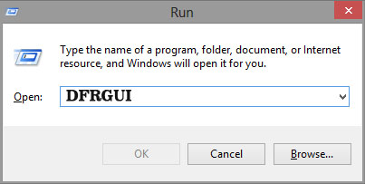

COMPUTER EXTRA
1.HARD DISC AND SSD KA APNE SYSTEM MA PATA LAGANA
•Computer me hdd hai ya ssd kaise check kare:- दोस्तो hdd और ssd दोनो ही कंप्यूटर में प्रयुक्त होने वाली स्टोरेज डिवाइसेज है। हर एक कंप्यूटर और लैपटॉप में स्टोरेज डिवाइस के रूप में या तो hdd लगी हुई होती है या ssd होती है। अभी सवाल ये बनता है की हम कैसे चेक करे की कंप्यूटर में hdd है या ssd ?
•क्योंकिक्यों बहुत सी बार ऐसा देखा गया है की जब हम कोई सेकंड हैंड लैपटॉप लेते है या जब कोई नया कंप्यूटर लेते है तो दुकान वाला हमे बोलता है की इस कंप्यूटर में ssd है और बाद में हमे पता चलता है की इसमें तो hdd है और हमे बेवकूफ बनाया गया है। आपके साथ ऐसा ना हो इसलिए हम यहां पर आपको इस विषय के बारे में जानकारी दे रहे है। अगर आपको मालूम होगा की कंप्यूटर या लैपटॉप में hdd है या ssd है ? ये कैसे चेक करते है तो आप ऐसी घटना का शिकार नही होंगेहों गे, साथ ही जरूरत पड़ने पर आप अपने जानकर लोगो को भी बेवकूफ बनने से बचा सकते है।
•कंप्यूटर में hdd है या ssd ये कैसे चेक करते है ? इसके बारे में तो हम आपको बताएंगे ही किंतु उस से पहले आपको यह पता होना भी जरूरी है कि hdd और ssd में क्या अंतर होता है ? अगर आप जानना चाहते हैं कि इन दोनों के बीच में क्या अंतर होता है तो आप हमारे द्वारा लिखा गया यह आर्टिकल पढ़ सकते हैं। फिलहाल हम जानेंगे की कंप्यूटर में hdd है या ssd कैसे पता लगाते हैं ? .

•अगर आप जानना चाहते हैं कि आपके कंप्यूटर में हार्ड डिस्क लगी है या SSD तो निम्न Process क Follow करें.
1.सबसे पहले Window Key के साथ R Press करें.
1.चरण
1.⊞ Win+R प्रैस करें: इससे विंडोज सर्च बार ओपन होगा।
2.इसके बाद सर्च बार में DFRGUI सर्च करें . .
2.चरण
3.अब Media Type वाले कॉलम में देखकर आप पता कर सकते हैं कि आपके PC में HDD है या SSD.
3.चरण